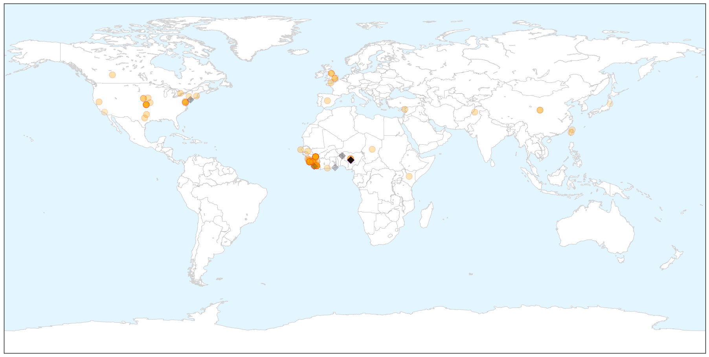
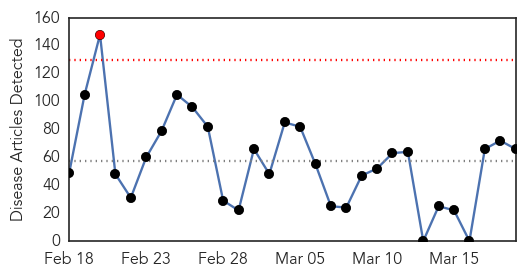
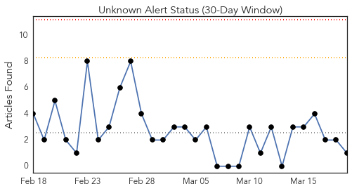
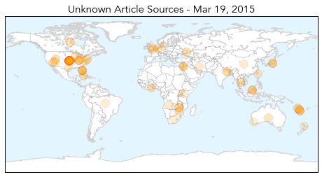
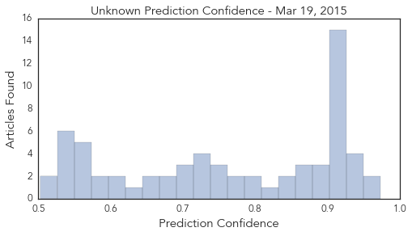

Ebola
30-Day Web Trend
0 alerts, 0 warnings

30-Day Twitter Trend
0 alerts, 1 warnings

Article Locations

X

Article Confidences

Top Articles:
- 1.000
- There Are Now More Than a Dozen People Being Monitored for Ebola in the U.S.
- 1.000
- IN-DEPTH RADIO :: UPDATE: Patient tests negative for Ebola at Sunnybrook :: News
- 1.000
- US missionaries beat Ebola
- 1.000
- Sierra Leone imposes new curfew to contain Ebola
- 1.000
- The First Cases of Ebola Originally Thought to be Caused by Lassa Virus
- 1.000
- Sierra Leone orders Ebola lockdown; more aid workers evacuated
- 1.000
- Ebola – Sierra Leone to lock down 2.5 million people to fight the virus
- 1.000
- Ebola outbreak: Sierra Leone lockdown declared 'success'
- 1.000
- How Slow Responses Made the Ebola Outbreak So Deadly
- 0.999
- The Ebola Epidemic Isn’t Only Threatening Guineans’ Health · Global Voices
- 0.999
- Evacuated health worker tests negative for Ebola
- 0.999
- Ebola: Sierra Leone plans second lockdown to stem epidemic
- 0.999
- Two Additional Heath Workers Flown Back To US For Ebola Monitoring
- 0.999
- الاخبار المصورة
- 0.999
- Sierra Leone to lock down Ebola hotspots next week - officials
- 0.999
- Sunnybrook patient tests negative for Ebola
- 0.999
- Sunnybrook patient tests negative for Ebola
- 0.999
- Ebola crisis: Sierra Leone lockdown to hit 2.5m people
- 0.999
- Ebola-hit Sierra Leone to lock down 2.5 million people - Sierra Leone
- 0.999
- 2 more aid workers sent to U.S. for Ebola monitoring; up to 17 since Friday
- 0.998
- Violence against women rises in Ebola-hit nations
- 0.998
- IOM Ebola Response Training Expands across Sierra Leone from Academy in Freetown
- 0.998
- Risk of foodborne transmission of Ebola not demonstrated in practice
- 0.998
- An Ebola scare at Sunnybrook hospital turned out to just that as a patient has tested negative for the deadly virus
- 0.998
- Patient At Sunnybrook Tests Negative For Ebola
- 0.998
- Violence against women rises in Ebola-hit nations - ministers
- 0.998
- Ebola cases surge in Guinea, as Liberia and Sierra Leone show progress
- 0.998
- Liberians Worry Ebola Could Return From Guinea, Sierra Leone - Liberia
- 0.997
- The case for EOCs post-Ebola
- 0.997
- Sierra Leone to lockdown 2.5 mn to stem Ebola crisis
- 0.997
- Two Aid Workers Return to US for Ebola Monitoring
- 0.996
- Sierra Leone plans another shutdown to stop Ebola's spread
- 0.996
- Ebola diaries: Hitting the ground running
- 0.996
- What Do Vaccines Have to Do With 'Personal Freedom'?
- 0.996
- News Talk 610 CKTB :: Update: Toronto patient tests negative for Ebola :: News News
- 0.996
- Sierra Leone: In Ending Ebola, a Struggle to Track Victims' Elusive Contacts
- 0.994
- Deep in the jungle, hunting for the next Ebola outbreak
- 0.993
- Sunnybrook patient tests negative for Ebola
- 0.993
- In Sierra Leone, Ebola virus means 'school is not safe'
- 0.992
- Ebola-hit Sierra Leone to lock down 2.5 million people
- 0.992
- 2 aid workers flown back to US for Ebola monitoring
- 0.991
- Sierra Leone Plans Another Shutdown to Stop Ebola's Spread
- 0.989
- The Economist
- 0.989
- Fear and loathing in Monrovia over Ebola trials
- 0.989
- Sierra Leone: Ebola Virus Disease Emergency Plan of Action (EPoA) n° MDRSL005 Update, 18 March 2015 - Sierra Leone
- 0.989
- 2 more health workers arrive US for monitoring
- 0.985
- 3 ways mobile helped stop the spread of Ebola in Nigeria
- 0.984
- Ebola-hit Sierra Leone to lock down 2.5 million people
- 0.980
- Senators hotly debate language in fracking bill
- 0.980
- Maryland school districts seek calendar waivers
Showing top 50 articles...
Top Tweets:
- 0.914
- Ebola Cases Surge in Guinea as Liberia and Sierra Leone Show Progress - TIME http://t.co/c6YOuCdrnO ebola EVD
- 0.910
- @omojuwa: Looks like Liberia is about to knock Ebola out. Ebola currently on the ropes out there AUonEbola
- 0.889
- RT: Ebola Update: 24666 confirmed probable and suspected cases reported in 3 most affected countries with 10179 deaths. EbolaR…
- 0.860
- RT: Health care workers can amplify an ebola outbreak prior to diagnosis of pathogen. Heyman. iohc2015
- 0.840
- Ebola Air? Inside the plane that keeps Ebola patients alive while transporting ... - f http://t.co/0QGgHrt05j ebola EVD
- 0.788
- ebola update. 24701 cases 10194 deaths. GN: 95 new cases SL 55 new cases LB: 0 cases in 3 weeks http://t.co/KmsG490VBL
- 0.785
- RT: Liberia -->Ebola-free but "@EbolaAlert: Guinea Ebola cases rise 3 docs infected http://t.co/7j0N9oTKnz EbolaNews http:/…
- 0.742
- 3 ways mobile helped stop the spread of Ebola in Nigeria - Brookings Institution (blog) http://t.co/dpoXaxCKwB ebola EVD
- 0.697
- RT: Tejanie Golafaley: from fearful Ebola denier to fearless Ebola fighter. Watch and share! https://t.co/mQH7zdEyeR…
- 0.693
- Guinea surpasses SierraLeone in number of new Ebola cases last week for 1st time since outbreak began. EbolaResponse isn't over yet
- 0.692
- @UNICEF: The Ebola virus has infected more than 24k people since January 2014. 1 in 5 are children http://t.co/hmGXZSF1Ms"
- 0.668
- Biosecurity and Biodefense: Lessons from Ebola Virus Outbreak http://t.co/OF9zgb6zxJ
- 0.658
- Throwback: Liberia's last known Ebola patient Beatrice Yardolo leaving the Chinese Ebola treatment unit [Reuters] http://t.co/l03QBXkLu0
- 0.658
- Responding to Ebola Virus Disease on Commercial Airlines The CDC Experience http://t.co/ulee1XSLBp
- 0.650
- RT: The Ebola virus has infected more than 24k people since January 2014. 1 in 5 are children http://t.co/YQXGyjd13n
- 0.637
- The case for EOCs post-Ebola - Devex http://t.co/ze6sENSXb8 ebola EVD
- 0.617
- RT: The number of Ebola cases in West Africa is declining - but there’s still lots more work to be to gettozero http://t.co/YQXGy…
- 0.589
- Two more US healthcare workers repatriated for Ebola monitoring - Reuters http://t.co/JVhihMfHXH ebola EVD
- 0.580
- Patient suspected of having Ebola treated at Sunnybrook - Toronto Star http://t.co/V6b77CmJTD ebola EVD
- 0.576
- Deep in the rain forest hunting for the next Ebola outbreak - Washington Post http://t.co/vdARmGh55V ebola EVD
- 0.573
- Map. Ebola outbreak in West Africa - CadreHarmonisé analysis March/May 2015 foodsecurity http://t.co/Fztaah1jCp
- 0.561
- A Survey of UK HealthcareWorkers’ Attitudes on Volunteering to Help with the Ebola Outbreak in West Africa http://t.co/6knvVyVRNH
- 0.552
- Liberia's last Ebola patient left hospital last week a year after the West African country reported its first case. http://t.co/LVKaE7dQJF
- 0.551
- “The failure to prepare could allow the next epidemic to be dramatically more devastating than Ebola.”@BillGates Africaagainstebola
- 0.526
- RT: Care has been markedly different for a Sierra Leonean colleague who developed Ebola within days of a U.S. aid worker http://t.…
Unknown
30-Day Web Trend
1 alerts, 0 warnings

30-Day Twitter Trend
0 alerts, 0 warnings

Article Locations

Article Confidences
Top Articles:
- 0.974
- No Reported Cases of JE in Brunei
- 0.952
- No TB outbreak in Shawnee County, but awareness advised
- 0.948
- Boy, 3, rushed to hospital with scarlet fever as disease cases increase 'seven fold'
- 0.944
- Tuberculosis case at Zion National Park investigated
- 0.932
- Increase in scarlet fever
- 0.929
- Zion NP food worker being treated for tuberculosis, NPS says low risk to public
- 0.926
- Health Officials test 27 People Positive for TB at Olathe Northwest High School
- 0.921
- Close To 30 Kansas High Schoolers Test Positive For Tuberculosis
- 0.917
- Chicago Tribune
- 0.917
- Chicago Tribune
- 0.917
- Chicago Tribune
- 0.917
- Chicago Tribune
- 0.917
- Chicago Tribune
- 0.917
- Chicago Tribune
- 0.917
- Chicago Tribune
- 0.917
- Chicago Tribune
- 0.917
- Chicago Tribune
- 0.917
- Chicago Tribune
- 0.912
- 27 Tested Positive For Disease So Far
- 0.912
- Tuberculosis outbreak infects 27 more students in Olathe
- 0.910
- The world windows to Thailand
- 0.895
- HIV outbreak spreading fast across southern Indiana
- 0.895
- HIV outbreak spreading fast across southern Indiana
- 0.886
- Southern Indiana HIV outbreak worsens
- 0.879
- State: 27 at Olathe high school tested positive for tuberculosis
- 0.859
- Relief action in full swing - Vanuatu
- 0.858
- Misperceptions Keep Kids from Getting Lifesaving Treatment for Tickborne Diseases
- 0.851
- When it comes to health, listen to your mother
- 0.849
- 60 health workers attend workshop on Tuberculosis
- 0.814
- Decline in U.S. Tuberculosis Rates Slows
- 0.808
- Simple Solution Improves Water and Sanitation in Zambian Healthcare Facilities
- 0.799
- Tests reveal 27 Olathe Northwest students, staff have TB infections
- 0.784
- Vanuatu: Tanna Island devastated by Tropical Cyclone Pam - Vanuatu
- 0.768
- Vanuatu: Tropical Cyclone Pam - Humanitarian Snapshot (as of 19 March 2015) - Vanuatu
- 0.752
- Zion National Park confirms employee has tuberculosis, but insists visitors safe
- 0.746
- Admn bid to prevent encephalitis outbreak in Muzaffarpur district
- 0.741
- MoH receives a bigger budget
- 0.735
- Results of Pfizer's Community-Acquired Pneumonia Immunization Trial in Adults (CAPiTA) Published in the New England Journal of Medicine
- 0.733
- High water nitrates warning issued
- 0.728
- Safe Water Supply Could Reduce Newborn Deaths
- 0.727
- “World Oral Health Day 2015, Smile for life!”
- 0.695
- 28 Students Test Positive for TB; Media Mum on Cause
- 0.694
- Hospital needs you to help fight superbug
- 0.693
- No Japanese encephalitis cases recorded in Brunei
- 0.672
- Texas hospital TB probe ends with no active cases seen
- 0.669
- CAL stewardess possibly spreads rubella to over 1,000 passengers
- 0.656
- New rules of consent: the patient decides
- 0.656
- New Clinical Study Shows MeMed's ImmunoXpert™ Blood Test Can Accurately Distinguish Between Bacterial And Viral Infections
- 0.625
- More TB cases identified at Olathe Northwest High in Kansas
- 0.612
- Namibia: Minister moots free TB, HIV treatment for Angolans
Showing top 50 articles...
Top Tweets:
-
No tweets found for Mar 19, 2015